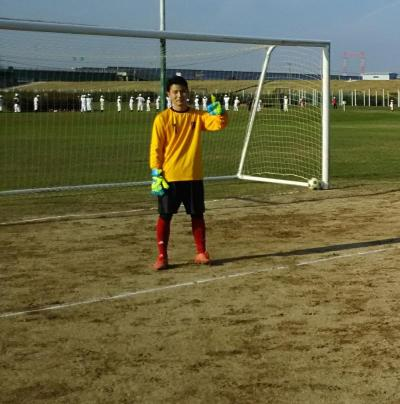

今日は試合前に疲れましたね、なんでグランド使用前の１５分前しか門が開かないねんって（笑）。サービスセンターに確認したら３ヶ所は通年７時から開くけど、後は１２月～２月は９時から開園で１５分前からしか車の入り口を開けないようにと、河川事務所から厳しく言われたらしいですわ。ほんまお役人仕事でんな。
まあ、それはおいといて。ラインもそこそこ残っていたのもあって何とか２０分４本出来ましたね。お相手して頂いたYODRIDさんありがとうございました。ただ、僕が以前に居たチームメイトが２名居たのは以前からやけど、今日は倍になってた（笑）、正式入部と助っ人なのかわからんけど掛け持ちで、今日は前居たチームの練習大丈夫やったんかいな（笑）
相変わらずYODRIDさんは誰もが裏へや常に動いてパスをもらう、サイド攻撃とかが上手くて勉強になりますね。その分、やられてますけど、うちはそういったのは目標としつつもポジションも固定制ではないですし、組織的な動きの練習もしてないし、強要するつもりもないのでうちはうちらしく楽しみながら少しずつ上手になって行きましょう。試合中でもナイスプレーの声や拍手とかはほんとうちのチームならではと思ってます。
いつもなら一試合ごとに振り返りますが、今日は全般的な振り返りをもうしましたので、うちが先制点を取ったシーンとかを中心に記載したいと思います。
全体的にうちはサイド攻撃があまりなく、縦へのつなぎが多かったですね。その中で１試合目はいい感じがありました。中央より少し左からテラさんが切れ込んで、ゴール前近くまで行ってシュート？パス？それがまえちゃんに渡って、まえちゃんももう少し切れ込んでシュート、相手にブロックされて、右側のペナルティアリアぎりぎりあたりにボールが跳ね返ったところになかやんがいて、そのままダイレクトでシュート、サブマリンのようないいミドルシュートがゴール左側に突き刺さりました。やったね、なかやん。対外試合の今年最後のゴールでしたね。段々動きも良くなってきてますし、それはまっとんとの特訓のせい？（笑）、今日はぜひコメントお待ちしてます。
後は点を取られましたが、今日は特にデフェンスのあたりでボールを持って取られることと、ボランチが２枚とも不在になって間をやられることが多かった気がします。ボランチ行く人は１人はやっぱり真ん中のアンカー的な役割をしてもらえたらなあって思います。僕はボランチは出来ないのであまり言えませんけどね。（バックの動きになっちゃいます）
後は４本目のヤスさんのキーパーはお見事でした。一点は仕方なかったですね。あれは怪我にもなりえるので危ないですからね。でも再三防いでくれてました。
個人的にも今日は不完全燃焼でした。シュート１本だけだったし、結構ミスキックやドリブリで取られちゃいましたしね。相手チームに以前のチームメイトが僕がボール持つと、「抜いてくるぞ」ってやじるのがいるので困ります（笑）
まあ、そんな一日でした。参加された皆さん、お疲れ様でした。
今年の活動もあと２回、最後の日曜日は紅白戦を予定しています。まだ未定の人は都合付けて参加をお願いしますね。
足が重い・・・、朝起きたら昨日の疲れがあって動けなかったっす。
今日は遅刻の人も含めて、合計９名の参加で、連続組が４名でした。今日のみの参加の人が５名いたので昨日したから最初から中止では無くて、今日は参加出来てボール蹴りたい人がいるので、今後も８人以上集まれば同じような対応で考えていきたいですね。
今日はゴールを立てずにしました。最初の時点では６人でしたので、鳥かごをしてました途中で一人増えてさらに鳥かごをしました。いつも以上に長くしてたんじゃないかな？
それが終わって引き続き円になってリフティングをしました。僕が目標は２０回でって言ったらヤスさんがそんなん余裕やでとかになっていざ始めたら、２回、３回とかしか続かず、目標が１０回、５回にと下がっていきました。ヘディング使うと結構続く感じでしたね、途中で円を狭めたり、真ん中に１人入ったりしましたが、最後まで２０回には届かず、まあそれが余裕の人だったらうちにいませんよね（笑）
８名になったので、次は恒例の？フットゴルフしました。僕は今までサッカーゴルフって呼んでましたが全国大会とかあったり、関東の方ではフットゴルフが出来るゴルフ場があるみたいですね。
２名で４チームしました。合計３ホールでしたが、谷越えや池越えとかそれなりに技術が必要でしたね。おもろかったんはヤスさんが最初のキックで２連続とも左の道路の方へ行ったこと、ハマさんが川？超えのアプローチショットで、蹴った瞬間に「しまった」。ボールは川の手前の石にピンポイントで当たって、蹴った場所の倍以上の距離まで跳ね返ったことですね。まあ、楽しく出来ましたね。
んで、最後はミニゲしました。最初は４対４でしたが、最後にぐっさんが来て４対５でしました。「ハマさん？」と相変わらずいじられたり、まっとん、なかやんのおもろいプレーがあったり、まえちゃんが指さしフェイント開発したり、僕もまえちゃんがしているのを真似したりとかいろいろあって楽しかったですね。
久々の参加のぐっさんが、大ハッスルで動きまくってでもパスは強すぎて誰も取れなかったりとか、たっちゃんが若い力で押し込んだり、ふっかんが相変わらず僕にいやがらせをしてきたりとか、ハマさんがうっぷん晴らしのボレーシュート決めたりとかいろいろあったけど、ヤスさんがいつも警戒しているまえちゃんに一瞬のスキを突かれて股抜きくらってへこんで「股抜かれるのはまえちゃんくらいやな」って言ったので、僕もその後すぐのプレーでヤスさんに普段はまずしないようなトリッキーなフェイントで股抜きくらわしさらにとどめを刺しました（笑）、その後もヤスさんとハマさんがゴール前で股抜き警戒して足閉じて立っているんでその２人の間をラボーラっぽい感じでなめたゴール決めて、２人の表情がおもろかったっす。
まあ、そんな感じでなんだかんだでいつもと同じ時間くらいまでしてました。参加された皆さん、お疲れ様でした。最後はハマさんがジャージを前後間違えて履いて、自らいじってくれと言ってました（笑）
来週は試合です、また早目に出欠確定登録お願いします。
昨日は寒い中、お疲れさまでした！
最近はすっかりコスいキャラが定着していやすが、
お陰さまで昨日はコスいゴールを２本決める事ができました。ではコスいカキコをさせて頂きますが、信じるも信じないも皆さんにお任せ致します。1点目はよっしゃんのナイスクロスとシゲさんのナイススルーのお陰でした！特にアイコンタクトなかったのですが、背中に目のあるかの如く絶妙スルーのシゲさんに感謝です！序盤から何度もトライしてオフサイドになっていた形だったので、うまく行ってよかったです！
２点目は、まえちゃんとのあの狭いところでのワンツーがビシッ！っと決まった時点で、ゴールは決まったようなものでした。僕が少しもたついたので、結果的に「性格の悪いシュート(byわだっち)」になりましたが、最高のゴールを決める事ができました！最近は個人的にボランチにハマってますので、皆さんの得点アシストをできればと思いますので、ガンガン前のポジション行っちゃってください！
今年も残すところわずかですが、楽しんでいきましょう！
今日の試合の参加予定者が２日前の時点で早退含めて７人で、昨日からギリギリまでぐるすけバグって把握できず。何とかというお願いもさせて頂いた結果、遅刻早退を含めて１２名の参加となり、うちは全試合うちのメンバーだけで試合をすることが出来て、かつ反対に助っ人の応援まで出すことになりました。ほんと数名の方は何とか調整とかしてくれたんだと思います。本当にいいメンバーに恵まれて感謝の気持ちでいっぱいです。
本日、お誘い頂いたスパークさん、いつも本当にありがとうございました。またお相手して頂いてスカルボーイズさんもありがとうございました。おかげで大きな怪我もなく、楽しい時間を過ごすことができました。今後ともよろしくお願いいたします。
今日も試合ごとにハイライトや得点シーンを中心に活動報告を書いて行きたいと思います。１試合目はスパークさんとでした。僕もですがほんと最初の一試合目は体が動かないですね。またファーストキックダフったし・・・。それでもお互いにいい感じで攻めたり守ったりしてましたが、痛すぎる１点を決まられましたね、まああれは仕方ないかな。相手のゴールキック？がライナー性で最後はゴロのような感じで相手さんに渡り、ちょうどシゲさんと僕との間でボールを受けようとしていたので、僕もトラップしたらすぐにプレッシャー掛けにいく予定でしたが、まさかのスカ・・でボールはそのまま流れてバックはどうしようもなく、その人が振り返ってボール追いかけてキープ、デフェンスはもう全く動けず、キーパーしてたわだっちと１対１、ゴール前に残っていた泥沼でも何とかボールは触ったんですが威力に負けて決められました。
２本目はスカルボーイズさんとでした。一人上手なフットサラーが居て翻弄されてましたが、本気で一人でドリで来られてたらたぶんお手上げだったでしょう。結構、相手さんが個人技を多用してくれたので、ゾーンで守ることができましたね。１本目は０トップみたいになってたんで、前の軸でワントップをスガちゃんにしてもらいましたが、それがいい結果に繋がりましたね。
左サイドでまえちゃんがボールをキープ、その外側を駆け上がっていくよっしゃんの動きをよく見てスルーパス、ゴールライン出るギリギリでよっしゃんが追いついて、左足でダイレクトでクロス、ゴロ気味でしたがいい感じでボールが来てシゲさんが技ありのスルー、そして右ペナルティアリア枠くらいに流れたボールをスガちゃんがこれまた走りながらダイレクトでシュート、右に逃げるような回転が掛かり、キーパーも追いつけずゴールになりました。
それ以外にもよっしゃんの惜しいシュートやスガちゃんとのサインプレーでのよっしゃんのフリーキックとかあって結構攻めてましたね。
攻められた時に僕はバックでしたが、相手の上手い人を何とか抑えることで必死でしたが、上手な人と１対１するのは個人的に楽しいですね。
３本目はスパークさんとの後半でした。この１点ももったいなかったですね。相手が切り込んできてシュートを打ったのをキーパーのシゲさんがナイスブロック、ボールが少し前にこぼれたけど防いだなって思ってから、シュートを打った選手がそのまま詰めてきていて、わずかなボールがこぼれたのを決められちゃいました。でもシゲさんはよく頑張ってくれてました。どちらかというとキーパー防いだ、良かった良かったと思って思いっきり油断していたヤスさんが目が点になってたのがおもろかったです。（笑）
今日もまっさんは頑張ったよー、右サイドハーフでしたが、左サイドでサイドラインを出てスローインの時にマークで誰にも出せない状況であったんで、右サイドから左サイドまで走って行って、ノーマークでボールを受けて（ごろうさんが取ろうとしてたけど奪い取ったった（笑））、そのまま左サイドを縦に突破してデフェンスを交わして、左サイドのゴールラインの沿ってゴールに近づいてキーパーと１対１、キーパーはいいポジションだったけどキーパーと左のゴールポストの間がボール一個分空いているのを見て、今日も左足でシュート、間を抜けて右のサイドネットに決まりました。今日は狙い通りでした。最近左が調子いいっす。
最近、ほんとサイドハーフが楽しくて仕方ないですね。切れ込みのも出来るし、中にクロスも入れられるし攻撃の起点になるのは嬉しいですね。ごりんさんのワンツーとかもいい感じで、こごりんの前でお父さん惜しかったですね～。あとわだっちの運動量はさすがっすね。左サイドハーフでしたが右ウイングのところまで動いてくれてました。今日はシュート数も一番多かったかもしれませんね。
最後はスカルボーイズさんとでした。個人的に攻めたかったんですが、勝っているので上手い人を封じ込めようと思って、スイーパーしましたがヤスさんとのコンビでいい感じで守れました。
個人的には小梅太夫が出てきて叫んでほしかったくらいな素敵な？ゴールがありました。
ゴール前でスガちゃんとまえちゃんがワンツーでスガちゃんが右側のゴールエリア外側らへんまでキープしたんだけど、前にはデフェンス３人くらいで、あーあって思ったら、昔の日韓戦で山口素弘選手が放ったような、山なりのループシュートが炸裂、キーパーも超えて素晴らしいゴールになりました・・・が、本来ならファンタジスタって言われてもいいくらいなのに普段からのキャラの影響か、散々マイナスの言葉攻めでしたね。やっぱりコスいと駄目っすね（笑）、何はともあれ本日２ゴール、ぜひスガちゃんにはカキコをお願いします。ちなみにスガちゃん、今のところ今年の得点王っすよ。（８点・・そのうちコスいのは何点かな？（笑））１点差で僕で２点差でテラさん。
でもスガちゃん、僕のゴールキックをスルーしようとして自爆で珍プレーして、飛び跳ねてたよね（笑）
もう一つ見せ場がありました。ゴール前の混戦で縦横無尽にずっと動いていてわだっちに誰かな？がナイスパス、完全にフリーで目の前もキーパーだけ、僕の中ではやったー、得点者わだっちで書ける、コメントももらえる、ようやく・・・というような思いが走馬灯のように浮かびましたが、打とうとした瞬間右側から相手のデフェンスが本来禁止なんだけどスライディングで、わだっち倒れこみながらとりあえず打つも無情にもゴールの左側にそれて、わだっちは倒れこむ、ファールでPKやんって思ってたら、なんとあのわだっちが足をつるということになってビックリでした。パスをもらった時にもうそうなってたとのことでしたが、ほんとみんなびっくりしてました。得点は次回以降でで、今日はお風呂入ってゆっくりマッサージとかしてくださいね。そういえばその前の試合でごりんさんもつってたなあ。今日は皆さん良く動いてたし、普段より出る試合数が多かったですもんね。
まあ、そんな感じの一日でした。参加された皆さん、お疲れ様でした。

今日は朝は寒いなって思いましたが、段々と暑くなってきましたね。
朝早めにコスい人迎えに行ったら、寝坊って（笑）これが連絡取れる僕でまだ良かったですけどね。集合時間は皆さんきちんとお願いしますね。本日は遅刻早退合わせて１４名の参加でした。
今日は個人的にも２年以上ぶりに会ったチームさん、ファントリックさんとのフレンドリーマッチでした。お相手して頂きありがとうございました。また良ければ今後もお願いします。
さて、今日も試合ごとの振り返りをしたいと思いますが、試合準備時に用具箱の蓋に頭をゴーンとされたごりんさんは大丈夫だったですかね？それが原因で急用で早退にしときます（笑）
１試合目は僕は審判してましたが、僕も含めてですが相変わらず体が動かないですね。きちんとアップは各自しておきましょうね。特にわっち、スカばっかりでごりんさんにボールぶつけるしほんまえらいことになってたよ。（笑）
最初は初顔合わせもあったりで、ボールもおぼつかず結構攻められてましたが少ししてからいい感じで攻めたりしてましたね。相手さんのメンバーが一人近くでその間小学生？が入ってましたが怪我とか怖いので近づかないようにしてたら結構上手で裏へのパスとか厄介でしたね。まあ、そんな感じで一進一退で終了しました。
２試合目はバックからでしたが、ちょうどマッチアップの場所らへんに小学生？、なんも出来へん。途中で交代になってやっと普通に戻りました。僕が小学生？に抜かれたとかいう噂を振りまいたのは誰ですかね？？
以前に中学生にやられたんはテラさんですよ（笑）
僕もファーストタッチ後のボール蹴るのはほんと毎回ダフルのを何とかしないと。
得点はうちのチームから生まれました。流れるようなパスで誰かからテラさんに渡って、テラさんがパスしようとしたら相手にボールが当たって、それがゴール前にいたユウちゃんにボールが流れて、ユウちゃんが右サイドから上がってきたわっちに横パス、それをわっちが決めてゴールでした。
３試合目はまっさんショーの始まりっすかね（笑）。左サイドでプレーしましたが、体力無い中意図的に下がってボールをもらうようにしてました。１点目は左サイドバックしてたまえちゃんから下がってもらいにきた僕あてに縦パス、相手がすぐ近くに居たのでトラップしたら取られるかなって思って、そのままボールまたいで前向きにドリブル、一人かわして左サイドからクロスと思ったけど誰も中におらず、キーパーが前に出ていたのでループを打ってみるかって思って左足でシュートしたら、自画自賛の右サイドポストに当たってゴールになるというビューティフルゴールがうまれました～やったね。でも周りからはさ・・・センタリングの失敗とか言われるし（涙）、まあ確かに以前はあったよ、深北緑地とかでね。でも今回は入ったのはまぐれだけど狙ったことは信じておくれよ～。でもなんだかんだで僕の得点って結構芸術的多くないっすか？（笑）、まっとんのスーパボレーを消してやる（笑）
でもね、頑張って得点取ったんだけど、その後まえちゃんがクールポコってね、ごろうさんなみの絶叫が響きました。あくとくとか居たら毒を吐かれまくってたでしょう（笑）
でももう一回頑張ったんだよ、右サイドから攻撃があったので僕は中央へ入り込んで、狭いエリアでパスをもらって何とか粘ってゴール前で右サイドから左サイドの方へ相手を交わしながらドリブルでしてたら前にスペースがあって、キーパーが左寄りで右サイドが空いていたのでゴールエリアの左端くらいから、じじいだけど頑張って腰を回転させて左足で右サイドネットに決めました。こっちのほうが個人的には嬉しいゴールでしたね。
反対にコスい人が中央でボール持ってたんでバックラインの方からスプリントしてパスパスってお願いしたら出たんだけどちょろ・・・、敵に取られて終了。俺のダッシュを返せーでしたね。まあ反対にサイドから駆け上がって今度はゴール前にスガちゃんが居たんでセンタリングって思ったら、足がやばくてダフって相手にコロコロ・・・まあそんなもんでしょ（笑）
４本目はプチ自己嫌悪、バック固めるためにスイーパーしたんだけど、味方との声の掛け合いとか無くて、自滅して２点取られましたね。１点目も任せてって一言あれば僕が防げたし、２点目も味方と交錯してこぼれ球を決められて、ごっつあんを相手にあげちゃった感があってちょっと悔しいっす。これからは声を掛け合って対応しないと駄目ですね。
でもうちもいいプレーがありました。たっちゃんからわだっちで、わだっちが左サイドから駆け上がって、少し中に居たまえちゃんにボール出してワンツー、綺麗にわたってゴール左側まで駆け上がってシュート、ちょっと角度が無かったのが残念でしたね。相手キーパーに阻まれましたがいい感じだったと思います。
もう一つは僕がスイーパーの位置から裏を取ろうと動いてくれていたまえちゃん目がけて弾丸ボールが飛んで行って、相手の頭上を越えてまえちゃんが走っていた前らへんに転がってそのままキープしてキーパーと１対１・・・、まえちゃんは今日は「記憶にございません」だそうです（笑）でもいい飛び出しで合わせやすかったです。
来週は土曜日が試合になります、まだ未定の方は早目に出欠登録をお願いします。
本日、参加された皆さんお疲れ様でした。
画像はいいキーパーグローブを最初にはめて大活躍？してダンディなお方でっす。（笑）
ちょっと久々の活動報告になりました。
今日は朝はちょっと曇っていましたが、昼前にはお天気もよくなりましたね。朝８時頃に到着して、チームバックが無かったので、個人的な応急用のカラーコーンで場所取りをし終わった頃くらいに急におっちゃんが来て、マーカーを並べ始めたので、「取っているんですけど・・・」って話したら「どこを取ってんねん」とか言われて、コーンを説明すると無言でマーカーを回収して戻って行って、結局は奥の方で子どもたちと移動したみたいですが、新しいチームなのか段々場所取りのライバルが増えてきましたね。なによりコーンに救われました。
今日は合計で１３名の参加がありました。
最初は１１名で開始、鳥かごを２個ボールで外７、中４でしました。どうなるかなって思ってましたが結構、いい練習になりましたね。パスを出したいのに相手が気づかないことが良くあり、同時にボールが２つもあったりして、いかに周囲をよく見たり声を掛けることが大切なのかがわかりましたね。
次にポストシュートでしたが、その前にゴールに向けてボールを蹴っていたテラさんがずっこけて、横っ腹を強打し悶絶（笑）、いいネタありがとうでした。きちんとカキコしときます（笑）
途中からはいつも通りになりましたが、ポストシュートもポストに強いボールを蹴って、ポストが斜めに戻してそれをシュートという感じで、試合では結構あるかもしれないですが実際にすると難しいなって感じました。
その次はセンタリングです。中央から右サイドにボールを蹴って、右サイドに３名くらいでそのボールをダイレクトやトラップ、時にはドリして中央にセンタリング、それをシュートって感じでした。最近ダークさが増してきたハマさんのなぜか後ろへ飛んで行ったヘディングがおもろかったです。
次に久々に６対６をしました。セットプレイからしましたが、実際の試合では中の人は立っているだけでなく、動いてコースを作ったりしないと、キッカーが出しずらいことが多いですので、また反対に相手チームが動いてきたときにバックがきちんとマークに付かないと、飛び込んできて１点取られるのがうちは多いので、もっときっちり練習していく必要があるなって思いました。
最後はいつも通りミニゲでした。まあ、いつも通りのお笑いネタが多くありましたね。久々にまえちゃんに股抜きされたかきさん、かきさんが恋しくてチームを間違っていたまっとん、コーナーでコーンも一緒に蹴ってくれてました。
圧倒的に不利だったのでちょっと遠くからシュート決めたら、コスい扱いされた僕（でも、すがちゃんよりは１００倍ましだそうです（笑））、スローインを受ける時に珍プレーで動けなくなってボール取られ決められたかきさん、こけまくってたテラさんに僕、ずっとカラータイマーがなってたもりちゃん、全体的に個人技が多かった感じで、見せ場を作ろうと頑張ってたハマさんとか、それ以外にもいろんな楽しいことがあり、今日も終わりました。
来週は試合です。先日にメールで提案させて頂いた、試合用のキーパーグローブの部費での購入、特に反対者がいませんので本日購入しました。かなりええやつを３割引きにしてもらいました。来週のデビューではめるのはもちろん、得点王のわだっちですよね（笑）、練習ではもったいなので今まで通り、ぺらっぺらを使おうと思ってます。
８時集合ですので遅れないようにお願いしますね。
あと、試合だけでなく、通常も練習も含めて遅刻早退の方はコメント欄に見込みの時間の記入をお願いします。
本日参加された皆さん、お疲れ様でした。
昨日はお疲れ様でした。
雨上がりでドロドロになりましたが、とても楽しくサッカーできました。
ハマさん、早くに来てくれて、遠くまで歩いてヌカルミチェックしてくれたり、メール連絡的なこともしてくれたり、ありがとうございました。感謝～
昨日参加された皆さんお疲れ様でした。
場所によってはまだ雨が降ってたみたいですが皆さん集まってくれたので予定通り練習しました。
わだっちが急遽来てくれたり、ごろさんも来て合計１２名集まりました。
場所は、枚方大橋よりのところでやろうかと思ってましたが、いつもやってるところの北側の少し前に芝生を張ったところの方が状態がマシだったのでそこでやりました。
最初は、わだっち提案の縦方向に攻めるチームと横方向に攻めるチームに分かれ５対５をやりました。
そのあと、ミニゲーム１０分を４本位したところでまた雨が降って来たので最後に２０分１本だけして早目に終了しました。
皆さん結構濡れましたが風邪など引かれてないでしょうか。
だんだん寒くなり、また師走の忙しい時期になりますが体調崩さないようにしてサッカー楽しんで行きましょう！
昨日、参加の皆さんお疲れ様でした。今回も怪我なく楽しくサッカーできて、良かったです。私は３ゲーム＋エキシビションで、気づけば４ゲーム出場させてもらい、老体にはかなりの疲労がきました。おかげで美味い酒を呑むどころか、ビールを１杯飲んだら、そのまま死体のようになっていました。フリーキックの時、ゆうちゃんが私のほうに ”どうする？”みたいなアイコンタクトをしてきたので、ゴール前少し距離はあったけど、ゆうちゃんのキック力なら十分ねらえるし、きっとこぼれ玉が戻ってくるんじゃないかと思い、ゴールを指差すとナイスキック！予想通り私のほうにボールが跳ね返ってきました。結果的にまたゆうちゃん＆カツコンビになってしまいました。ゆうちゃんとは何か奇妙な関係があるのかも（笑） 次もがんばろうね！
まず、勝ち越し逃してすみませんでしたm(._.)m
キーパーしてても、気持ちが前へ。前へ。笑
ボールきても、手より足が先に。。
んでも、楽しかったっす。
ゴールキック。。練習せねば。。私蹴る時
味方も含め、敵まで。。だいぶと近くまでよってこられましたね。。てか、スガちゃんけってよ！笑ってるし